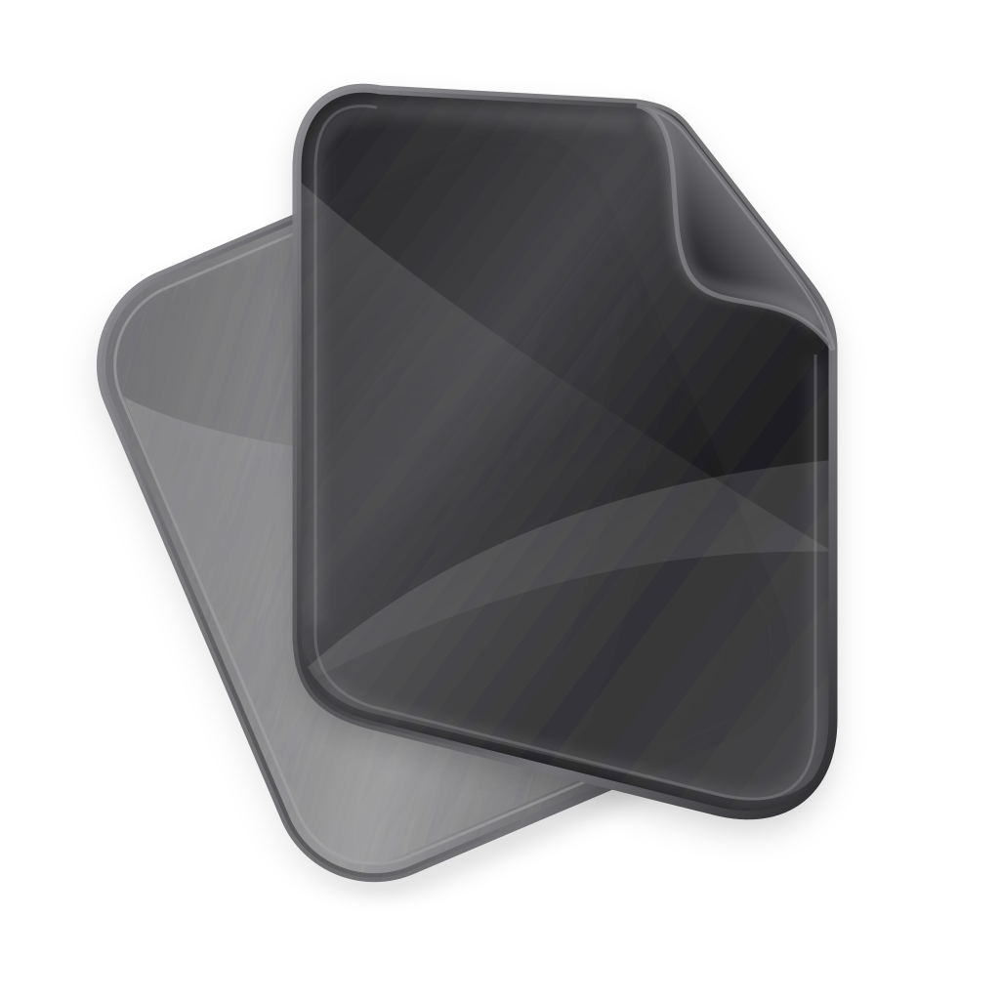
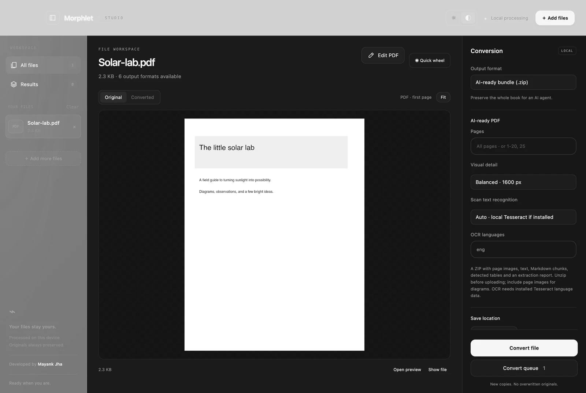

A proper PDF workspace.
Edit supported original text. Replace images. Annotate, fill forms, and organize pages.

MorphletGet Morphlet ＋A SMALL UTILITY. A BETTER FLOW.
A local file converter and PDF editor.
Convert, edit, and carry on. All on your device.
macOS · Windows · Linux Free & open source
MORPHLET / HANDS-ON PREVIEW
A different format. Just the right finishing touch.
Every available output, in one place.
The tools around your next format.
Hover, tap, or drag to explore. Scroll a wheel to step through options. Use the arrow keys, then Enter to select.
Interactive product preview. Files aren’t uploaded or converted in your browser. See the full conversion guide.
02 / MORE ROOM TO MAKE IT YOURS
Some files need a quick change.
Others deserve a little more attention.
Meet Morphlet Studio.

Edit supported original text. Replace images. Annotate, fill forms, and organize pages.
Crop, resize, choose your quality. Keep the original. Make the next version yours.
A quiet tray utility with a quick wheel when you need it. A full Studio when you want it.
03 / BETTER CONTEXT STARTS HERE
Diagrams tell a story text alone can’t.
Give your AI the pages, the structure, and the bigger picture.
04 / PERSONAL BY DESIGN
No conversion uploads. No account to create.
No detour through someone else’s server.
Just your files, becoming what you need.
A LITTLE LESS FRICTION, STARTING NOW.
Free. Open source. Ready for your desktop.
Downloads open on GitHub Releases. Choose the package for your device.
Windows installers are unsigned. macOS builds are ad-hoc signed and not notarized.
Images including PNG, JPG, WebP, AVIF, TIFF and SVG; text, Markdown and HTML; PDFs; and structured data including CSV, TSV and JSON. Formats have different capabilities. See the conversion guide.
Morphlet has builds for macOS Apple Silicon and Intel, Windows x64, and Linux x64. Native Liquid Glass is available on macOS 26+, with a monochrome fallback elsewhere. Alt-drag support depends on your desktop and file manager; a floating drop target is available as a fallback.
You can edit supported original text, remove or replace supported embedded images, annotate, fill standard forms and organize pages. Scanned or complex layouts may be read-only. Paragraph reflow and secure redaction are not included.
Yes. File processing happens on your device. Morphlet does not implement conversion uploads, accounts or telemetry. Its source is available under the MIT license. Optional OCR uses a separately installed local Tesseract executable.
NEW IN V1.3.0
Cmd-only on Mac. Ctrl-only in Windows Explorer. Configurable in Studio, with a direct GNOME Files action on Linux.
Explore selection controls Available in v1.3.0. GNOME Wayland uses the Files action.BUILT WITH CARE. SHARED WITH EVERYONE.
Designed and developed by Mayank Kumar Jha.
Morphlet brings file conversion and PDF editing into one thoughtful desktop workspace. Local processing. Open source. Made for the moments between your bigger ideas.